Phase 60-1 샘플 세트 — 파스텔톤 픽셀아트 9-slice UI 에셋 3가지 옵션 비교.
각 옵션은 동일한 6종 에셋(패널 2종, 버튼 3-state, 바 프레임)으로 구성.
각 상단의 원본 이미지와, 그 아래 CSS border-image로 9-slice 늘림 결과를 확인하세요.
ASD Forge + PixelSprite LoRA
DreamShaper_8 + DarkFantasy-PixelSprite LoRA. 512px 생성 후 NEAREST 다운스케일.
장점: 자연스러운 디테일. 단점: 일관성 낮음, 9-slice 경계 불규칙.
패널 (원본 96×96)
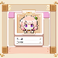
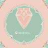
패널 A → 9-slice 늘림
패널 B → 9-slice
버튼 3-state (원본 160×64)
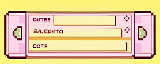
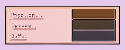
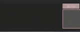
버튼 → 9-slice
바 프레임 (원본 160×32)
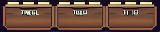
BPython PIL 프로시저럴
코드로 직접 그림. 파스텔 팔레트 고정, 픽셀 퍼펙트 모서리, 정확한 inset.
장점: 일관성·수정 즉시 가능. 단점: 장식 디테일 단순.
패널 (원본 96×96)
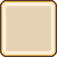
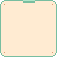
패널 A → 9-slice 늘림
패널 B → 9-slice
버튼 3-state (원본 160×64)
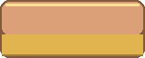
버튼 → 9-slice
바 프레임 (원본 160×32)
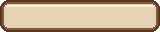
C하이브리드 (PIL + SD 장식)
B 베이스 + SD 생성 장식(별/리본/나무 질감) 오버레이. 구조 일관 + 질감 추가.
장점: 깔끔함 유지하며 디테일 보강. 단점: 생성 시간·디버깅 품 추가.
패널 (원본 96×96, 장식 합성)
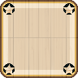
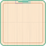
패널 A → 9-slice 늘림
패널 B → 9-slice
버튼 3-state (원본 160×64)
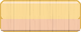
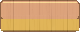
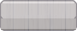
버튼 → 9-slice
바 프레임 (원본 160×32)

다양한 크기에서의 9-slice 늘림 (옵션별 패널 A)
같은 원본 이미지를 다양한 사이즈로 늘렸을 때 모서리/중앙부가 어떻게 유지되는지 확인.
| Small 140×70 | Medium 220×120 | Large 300×180 | |
|---|---|---|---|
| A | |||
| B | |||
| C |